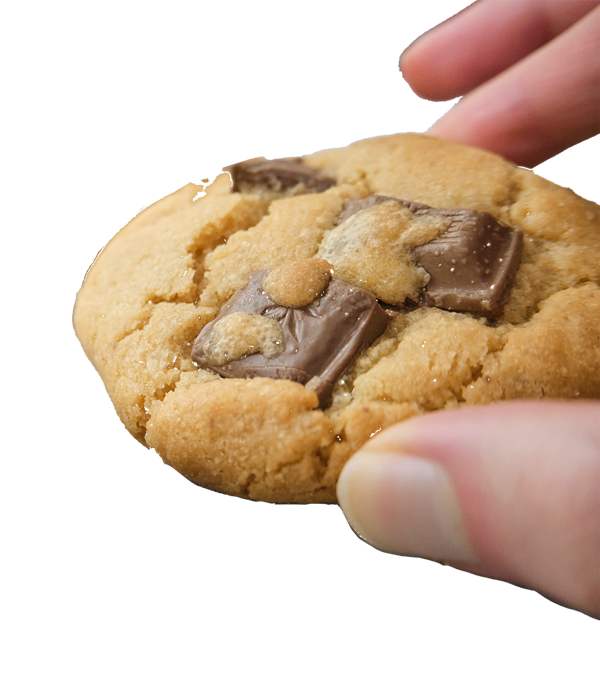

Images
Image 1: Cookie Club Logo
How I did it:
- In Adobe Illustrator, I opened a new canvas and drew a circle using the ellipse tool.
- Using the type on a path tool, I selected the circle and typed 'cookie'.
- I repeated this with a second circle, typing 'club'. I could not write the text around a single circle as I wanted both words to be the right way up.
- I then flipped the text in the second circle to be underneath the first, to achieve the desired effect.
- Next, I drew another ellipse with five smaller ellipses inside, holding down the shift key to keep them symmetrical.
- Once I was happy with the cookie shape, I aligned it with the text to be in the centre.
- I created two very small circles to align with the text and placed them in between the two words.
- Finally, I exported the image as an svg to use it across my designs in different sizes, and to be able to re-colour it.
Image 2: Cookies
How I did it:
- For this image, I took a photograph of my hand holding cookies.
- I imported the image into Photoshop to adjust the colours.
- I increased the brightness of the image, as well as adjusting the exposure, vibrance, and saturation to improve the look of the cookies.
- I then used the crop tool with a fixed ratio to crop it into a square.
- I exported it as a JPG using the Photoshop 'Save for Web' option to ensure it was useful for the web, and as it was not an extremely colourful image this would not impact the final result.
Image 3: Happy Cookie
How I did it:
- To create this image, I first source two photos: one of cookies I had baked, and the other a stock photo of a balloon with a happy face on it.
- I imported the cookie image into Photoshop, and then placed the balloon image on a separate layer above the first.
- I opened the balloon image layer and used the Magic Wand tool to select the balloon and the hands in the image, allowing me to delete the background of the photo.
- I then selected 'Blending Options' on the image of the balloon, and using the 'Soft Light' Blend Mode with 70% opacity I was able to overlay the smiley balloon onto the cookie.
- I then adjusted the positioning of the balloon to be in the middle of the cookie.
- I exported it as a JPG using the Photoshop 'Save for Web' option to ensure make it easier to upload onto a website.
Image 4
How I did it:
- I first found a mock up of a box online and imported it into Photoshop
- I then created a series of artboards in Figma that I exported as images into Photoshop to use as the sides of the box.
- Using smart layers in Photoshop, I put the relevant images onto the sides of the box.
- I then changed the background of the image to fit with the colour scheme of the site.
- I exported it as a JPG using the Photoshop 'Save for Web' option to ensure make it easier to upload onto a website.
Image 5: Product Mockup
How I did it:
- To make this image, I first edited a stockphoto sourced from Unsplash.
- In Photoshop, I adjusted the brightness, saturation, and hue of the image to make it nicer to look at.
- I then created a triangle shape on a new layer, and filled it with the pink from my colour scheme. I moved the triangle to be in the corner of the image.
- I then made two text layers, using the same typeface in two different fonts to create visual distinction.
- I then imported the logo I had created earlier and placed it in the top right of the image.
- I then exported it as a JPEG to optimise it for web.
Image 6: Transparent Cookie
How I did it:
- For my final image, I imported an image I had taken of my hand holding a cookie into Photoshop.
- Using the magnetic lasso tool, I selected the main parts of the image I wanted to keep.
- I then cut the selection and pasted it onto a new layer.
- I could then delete the rest of the background, and set the background of the canvas to transparent.
- I exported this image as a PNG, as it supports transparent images.